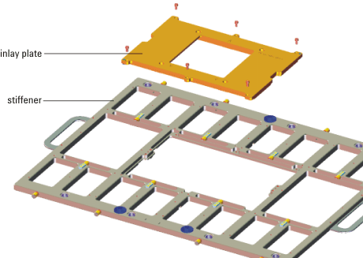

Docking to handlers
DUT stiffener inlay plates
The DUT board assembly consists of a DUT board mounted to a stiffener. You can adapt the DUT board assembly for use with different handlers by attaching different inlay plates to the stiffener. The figure below shows how to connect an inlay plate to a stiffener.

The inlays provide mounting holes required for attaching the DUT board assembly to the handler. The DUT board must provide corresponding holes at the same locations.
Handler Adapters
Handler adapters (also known as DUT docking plates, seal block adapters, or socket guide plates) help align the socket/contactor on the DUT board with the handler. This typically requires an adapter that is custom-designed for the specific handler, DUT socket, and the number of test sites that will be used. The handler adapter works in conjunction with the stiffener inlay to adapt the DUT board to a specific handler.
Advantest can provide assistance in designing handler adapters for specific applications. Other resources for adapter design are handler manufacturers and third-party vendors that specialize in handler hardware.
Before you design your DUT board, it is important to consider the specific handler adapter that will be used. For example, a particular handler adapter may require specific keep-out areas on the top surface of the DUT board. Failure to consider such design issues during DUT board layout, can lead to costly re-design of the DUT board and resulting project delays.
Adapters required for docking handlers to test systems are sometimes supplied by the handler manufacturer in an optional kit. Contact your Advantest representative and your handler supplier for information about additional parts required for docking a test system to a specific handler.
Functional changes
- Introduced before SmarTest 6.3.2